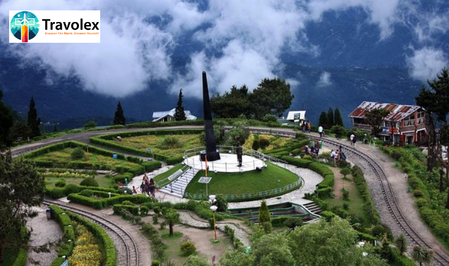

25th June
Nestled in the foothills of the Eastern Himalayas,
Darjeeling
is known for its cool climate, lush tea gardens, and stunning sunrise views. If you're looking for peace, beauty, and authentic local culture, Darjeeling is your next must-visit—and Travolex has your ideal itinerary ready.What’s Included in Our Darjeeling Travel Package
:
- Domestic flights or train tickets
- Boutique hotel stays with mountain views
- Guided sightseeing tours
- Visit to tea estates and cultural landmarks
- Daily breakfast and select meals
- Transfers from Bagdogra airport or NJP station
Highlights of Darjeeling
1. Tiger Hill Sunrise
2. Darjeeling Himalayan Railway (Toy Train)
3. Tea Estate Experience
Visit iconic estates like Happy Valley or Makaibari, walk through lush plantations, and enjoy a tea-tasting session with local experts.4. Ghoom Monastery & Peace Pagoda
Explore Buddhist architecture and enjoy peaceful moments at these serene landmarks.5. Local Culture & Cuisine
Taste authentic Tibetan and Nepali cuisine, explore local crafts, and visit the Himalayan Mountaineering Institute.When to Visit Darjeeling
The best time to visit Darjeeling for clear views and memorable experiences is during the autumn (October to December) and spring (March to May) seasons. These months offer pleasant weather, crisp air, and stunning visibility—perfect for watching the sunrise over the Kanchenjunga range from Tiger Hill. In autumn, the skies are generally clear after the monsoon, making it ideal for photography and sightseeing, while spring adds vibrant blooms and refreshing mountain breezes. Both seasons avoid the heavy rainfall and fog of the monsoon, ensuring a smooth and scenic journey through this charming hill station.Why Choose Travolex?
- Cultural Immersion: Interact with locals and explore beyond the typical tourist trail.
- Eco-Friendly Options: Support sustainable tourism practices.
- All-Inclusive Comfort: Stress-free travel with attention to detail and guest care.
Whether you seek adventure, relaxation, or a spiritual reset, Darjeeling offers it all. Let Travolex plan your perfect mountain retreat.